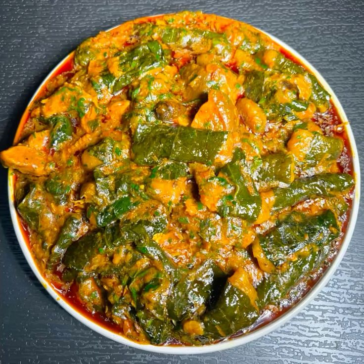

Ekpang Nkukwo
Home

A delicious and nutritious soup made with water yam, coco yam and other ingredients.
Ekpang Nkukwo is also among the rich, nutrient-dense delicacy native to the
Efik ,
Ibibio and
Anaang
people of southern Nigeria. It is prepared using a perfect combination of wild Afang leaves and water-leaf. The unique texture comes from slicing the Afang leaves very thinly and pounding them before adding them to the pot.
Ingredients for the above cooked Ekpang Nkukwo
- Water Yam
- Coco Yam
- young fresh Coco Yam leafs
- large quantities of potatoes leafs
- Meats
- Oil
- Salt
- Fishs
- Stock Fish
- Ibat
- Crayfish
- Catfish
- Perewinkle
- Water
- Spices
Steps to Prepare Ekpang Nkukwo
- Get all the ingredients setup
- peel some water yams and grind them
- peel some coco yams and grind them
- mix and turn the grinded yams with some amount of salts inside a tray or large bowl
- thoroughly watch the potatoes leafs and avoid wounding them
- wash the cocoyam leafs to remove any dirt or debris
- wash the perewinlkes
- get a large pot and pour some oil in the empty clean pot
- add the perewinkles to the oil in the empty pot
- mix the large quantiies of poatatoes leaf and cocoyam leaf in one bowl
- bring ur bowl of grinded yams and bowl of leafs and pot together
- sit tight and get ready for the work
- take each of the leafs, add two pinces of the grinded yams into the leaf and wrap it
- after each wraps, put them in that same pot in a well arranged manner
- do the step 14 until all the wraps are done
- boil water in a kertle till boilling point
- pour the boiling water into the pot of wraps
- now put the pot on fire for some minutes so the wraps can cook for 20mintes
- dont stirl or mix immediately after pouring the hot water in the pot while its on fire
- after 20 minutes, check if the wraps are cooked to your liking
- add the ingredients, meats, spices, more perewinkles, palmoils
- add more water if needed
- allow to cook and then stir after another 10 minutes
- have a taste and verify its okay
- ur meal is ready to be served, so put the pot out of fire
Home